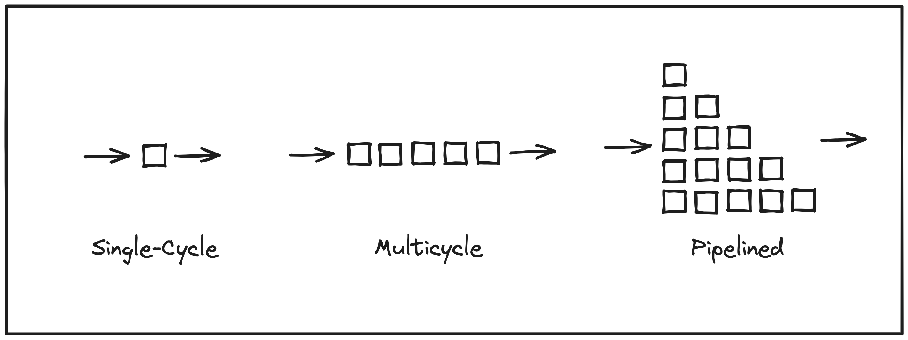
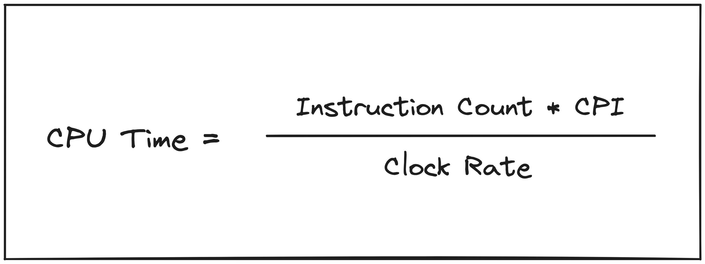
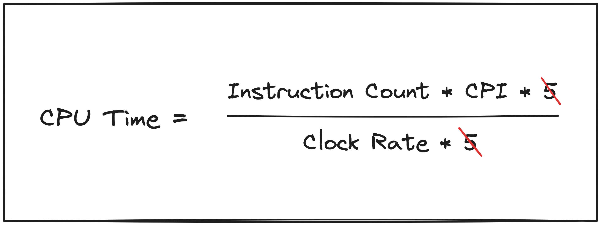

If you read most literature about processor design, you’ll inevitably be presented with three broad categories of CPU architectures:

- Single-Cycle
- Multicycle
- Pipelined
We’ll just be focusing on the first two for today.
In fact, my favorite introductory book on computer architecture, Computer Organization and Design (Patterson & Hennessy) progresses through Chapter 4: The Processor by explaining these three models in sequence. The first big idea can be synthesized into the following logic:
- There are some set of instructions defined in an instruction set architecture (ISA).
- Some instructions in the set are more complex than others (i.e. take longer to execute).
- If you spend the same amount of time on every instruction, then that amount of time must be at least as long as the time required to execute the most complex instruction.
(3) is where the inefficiency arises: for some less complex instructions, you are spending more time executing them than is required. A processor that operates in this manner is usually classified as a single-cycle processor. However, this common categorization has always bothered me because it focuses on the number of cycles, when the real issue is related to the time spent executing each instruction; specifically that the time spent executing each instruction is constant. This conflation can lead to confusion, especially when a processor that is decidedly not single-cycle is categorized as such.
Perhaps the reason why the term single-cycle is used rather than constant or fixed time is because literally spending one clock cycle (i.e. from one positive edge of the clock to the next) necessitates constant time per-instruction, assuming a single clock and lack of support for variable clock speed. If you instead slice the execution into stages, such as the classic 5 stages of Fetch, Decode, Execute, Memory Access, and Write-Back, you can opt to skip a stage when an instruction does not require it (e.g. a simple add instruction that sums the values in two registers and stores the result in a third does not need to access memory). If clock speed is remaining constant (i.e. each stage takes the same amount of time), then skipping a stage means that some instructions are executed more quickly than others, reducing the inefficiency in a single-cycle implementation.
But a multicycle implementation allows you to skip stages, it doesn’t necessitate it. Therefore, characterizing a processor as single-cycle or multicycle doesn’t really tell us anything about its performance. You could have a processor with multiple stages that executed every stage for every instruction, whether it was needed or not. This would technically be a multicycle implementation, and there could even be advantages to doing this. In Section 4.5 of Computer Organization and Design (which is companion material to the textbook and available online for anyone), advantages of converting a single-cycle design to multicycle is described:
“By introducing a few registers and multiplexors, we are able to reduce the number of memory units from two to one and eliminate two adders. Since registers and multiplexors are fairly small compared to a memory unit or ALU, this could yield a substantial reduction in the hardware cost.”
Nevertheless, this is not a statement about performance. Computer Organization and Design defines performance explicitly in Chapter 1:
“Time is the measure of computer performance: the computer that performs the same amount of work in the least time is the fastest.”
This definition is manifested in the CPU performance equation.

Moving from single-cycle to multicycle without any additional optimizations results in an increase in Clock Rate, which improves performance by driving up the denominator, but that improvement is offset by a corresponding increase in Cycles Per Instruction (CPI), which drives up the numerator. In the classic 5 stage example, the equation would be modified as follows.

This analysis also reveals where you might start to see performance improvements. If some instructions are able to skip stages in the multicycle implementation, then CPI may increase less than clock rate increases, resulting in an overall reduction in CPU time. The situation can be improved even further if one stage can be acting on one instruction, while another stage is acting on the next (pipelining). It may seem pedantic to distinguish the performance improvement from the implementation model when in practice the latter typically implies the former, but being specific about what is causing a performance improvement, rather than just enabling one, helps us better understand how hardware actually works.
What are we building? Link to heading
Tying this back to moss, our last
entry included the decision
to use the RISC-V 64-bit integer ISA (RV64I) as the base for the CPU. The work
I have been doing since that post has been around building a single-cycle,
constant time implementation, which is what led to me writing up this post.
While moss will eventually have a multicycle pipelined processor, starting
with a single-cycle implementation allows us to iteratively optimize and
document doing so along the way. Currently, only a very simple register
file has been and
merged, but more components will be landing soon!